id="js_content" style="">作者：献刀 李大虾
徐克的《青蛇》非常有意思。
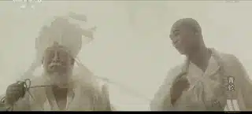
电影刚开始，法海大义凛然，手端大碗，在追杀另一个和尚。
原来，那个和尚是个蜘蛛精。
但这个蜘蛛精一心向善，每日认真聆听佛法。
这个蜘蛛精的决心非常大，已经修行了两百年，甚至已经幻化为一个慈眉目善的老和尚。
为了改变出身，蜘蛛精坚持了200年，这可以说是相当立志了。
但即使这样，法海依旧要将其击杀。
原因很简单，因为你就是个蜘蛛精。
妖始终是妖。
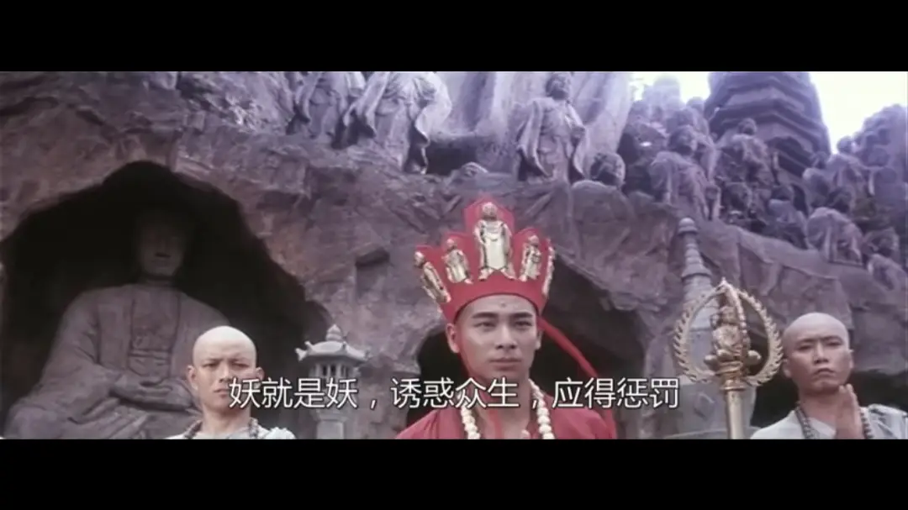
不论你后面怎么努力，不论你做了多少好事，你的出身就决定了你的死亡。
所以，法海一点也不手软，一禅杖便将别人两百年的努力给打没了。
这就是《青蛇》所要表现的问题：每个人都生活在某种标签之下，而这个标签是一种难以摆脱的暴力。
说你是中国人，你就不能把骨灰带到马来西亚。
说你是三和大神，你就与积极上进的有为青年没有关系。
说你是好媳妇，你就不能在婆婆面前发牢骚。
说你是好孩子，你的考试成绩就不能落后。
说你是东北人，你就应该能喝酒，就能侃段子。
说你是温州人，你不是卖皮鞋的，就是炒房的。
说你是di段人口，你就没有继续留在一线城市的权利。
韭菜、小粉红、美分、996福娃......
每一种标签背后代表的是不同群体对你的期望和看法。
祖国的期望、执政党对你的期望、父母对你的期望、身边同事对你的期望、老板对你的期望、键盘侠对你的期望......
这些种类繁多、动机不一的期望都会给我们贴上各样标贴，这些既是我们努力的方向，又是一座座压在我们身上无力反抗的大山。
但最能压死我们的稻草，往往是自己给自己贴上的标贴。
而《青蛇》真正要探讨和呈现的便是这种自我标贴下的无力。
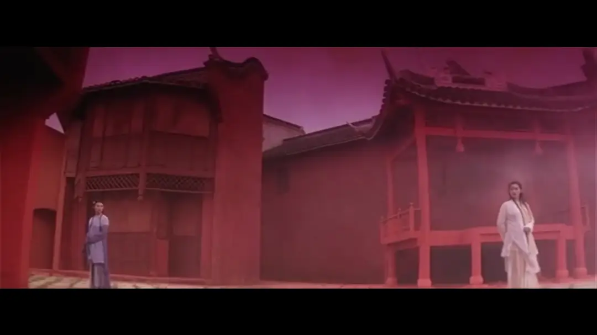
这种无力主要通过两个人物来呈现。
第一个便是开篇的法海。
“大胆！雕虫小技竟敢班门弄斧！大威天龙， 世尊地藏！大罗法咒， 般若诸佛！般若巴麻哄！飞龙在天！去！”
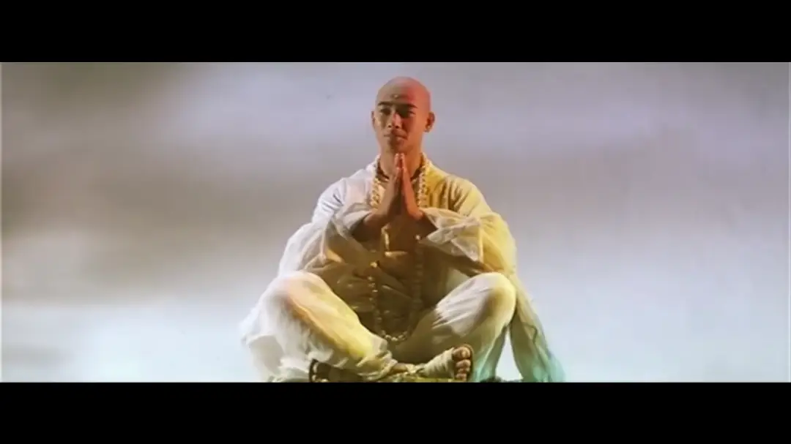
这些是法海的口头禅，从这些大义凌然的词汇中，我们可以知道法海自认为自己是降妖除魔、普度众生的得道高僧。
对自己有高要求本没有错，但是过分看重这种自我标贴便会变得傲慢虚伪，从而铸下错误。
法海便是如此，他过分自信，自以为妖就是无药可救，所以都不愿意给蜘蛛精机会澄清，便就别人打回原形。
后来，法海在自我标贴下，坚信自己定力十足，蔑视一切俗世情感，所以后面他和青蛇定下赌局，如果青蛇能够乱了他的定力，他就放过青蛇。
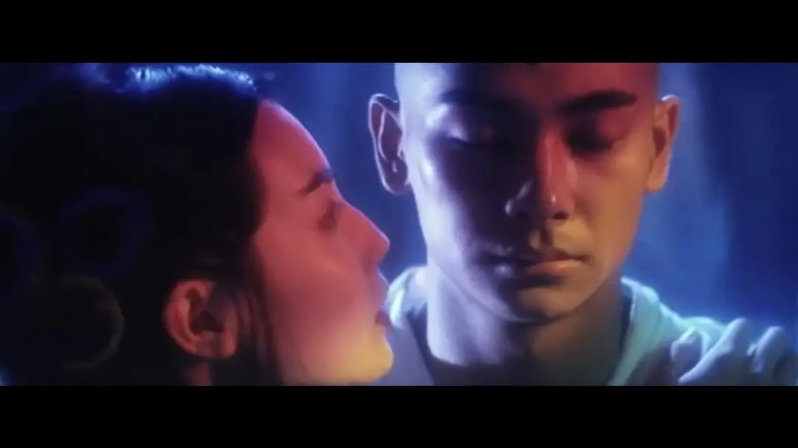
没有想到的是，法海竟然在青蛇的挑逗下动了情欲。
而讽刺的是，失败后，法海竟然不愿意承认自己的失败，口里又念着“妖精始终是妖精”要将青蛇收了。
实则这只是法海气急败坏的报复。
电影最后，法海和白蛇、青蛇斗法，当他最终发现白蛇真的已经修行成为人，并且生下许仙的孩子时，法海的世界崩塌了，他大声呐喊：这不可能。
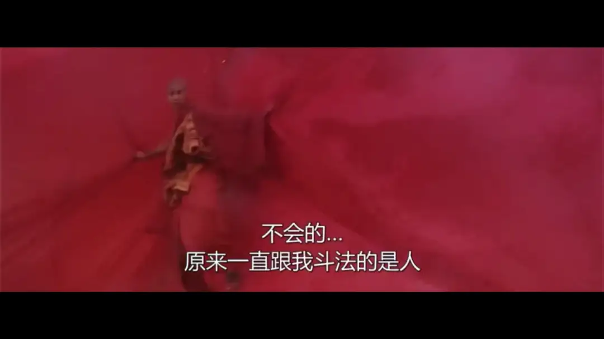
事实摆在眼前，这怎么不可能，是法海一直以来的傲慢给别人定了性，否定了别人无限的可能。
因此，法海的呐喊是过去一直信仰的自我标贴发生了崩塌。
第二个便是白蛇。
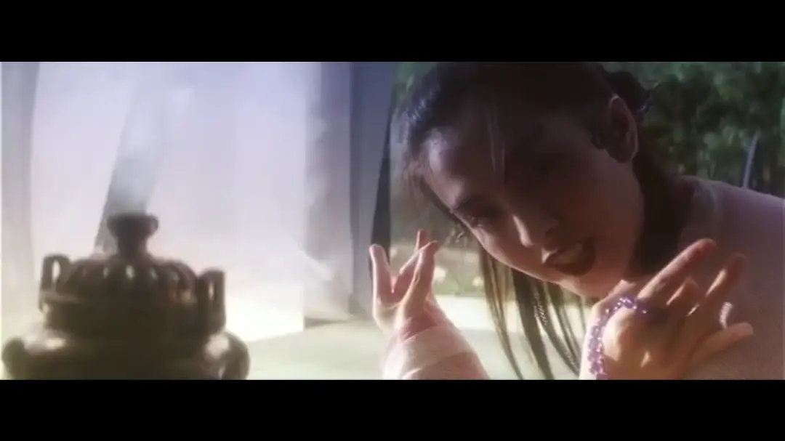
《青蛇》中的白蛇也是一个很有上进心的妖精，她有一千五百年的修行，她非常羡慕作为万物之灵的人类，所以梦想修行成真正的人类。
所以，她将“成为一个真正的人”作为自己最大的标贴。
白蛇非常认真地学习怎么做人，把人世间的各种人情世故、各种规则秩序，一套一套地都学过来。
并最终靠着自己一千年刻苦修炼的道行化身为人，并和许仙走在了一起。
可在这种自我标贴下，她也变得非常刻薄，在话里话外透露这对于妖精身份的鄙视，这些都让一旁的青蛇觉得很不爽。
最后，白蛇甚至为了许仙，要和青蛇决断。
白蛇因为太想成为人，后来甚至自欺欺人，竭力去美化人类的丑恶。
比如，她不觉得撒谎是不对的，而是将撒谎当作人类再正常不过的行为。
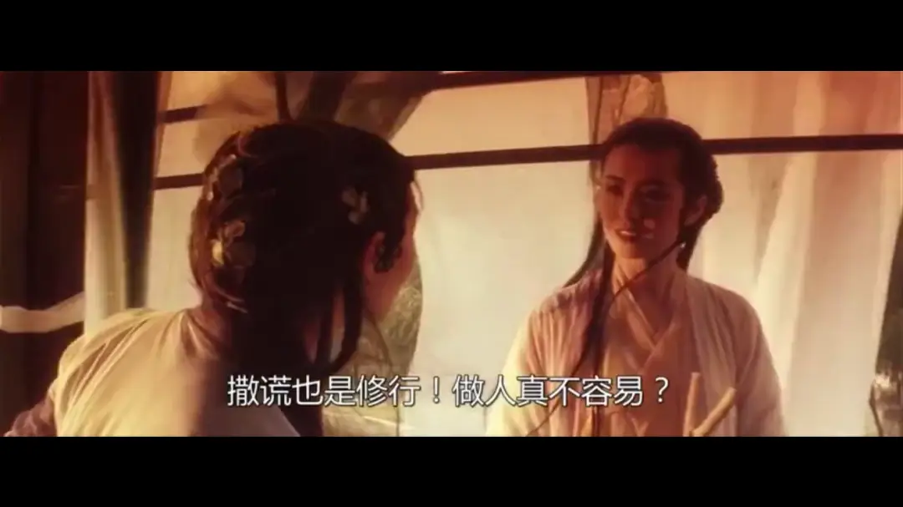
白蛇坚信人与人之间的情是从一而终的，可当她后来看到许仙被青蛇挑动时，她并未承认人类情感的脆弱，而是选择与青蛇决裂。
法海自命自己为不会犯错的大神，白蛇自命自己是可以修炼成人的妖精。
两个人都是非常自我为义的，同时也是极端固执的，给身边人带来了很多压力和灾难。
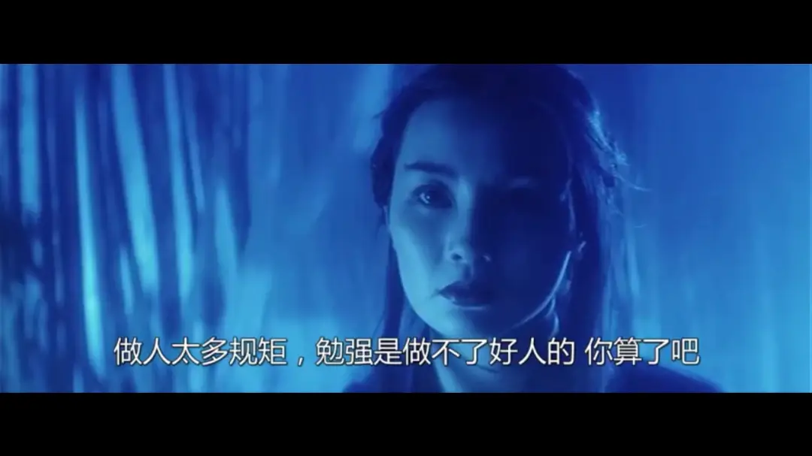
而这部作品名叫《青蛇》，主创用青蛇表达了不同于法海和白蛇的另一种生命状态，一种更加诚实、更加率真的生命态度。
相比于法海和白蛇的高姿态，青蛇鲁莽又率真，她看山是山，看水是水，看情欲就是情欲，看快活就是快活。
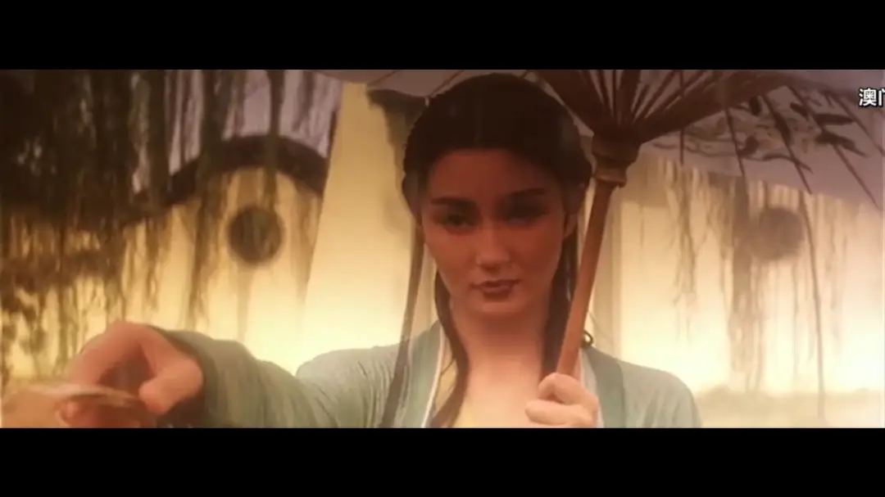
她并未给自己强行贴上一个自我励志的标贴。
她只是作为白蛇的妹妹，陪着姐姐一起体验她的梦想。
可是她怎么都学不来，人类撒谎不眨眼，她撒谎就觉得特别难受。
白蛇将人类的七情六欲摆上神坛，青蛇好奇便直接问许仙什么是人的七情六欲。
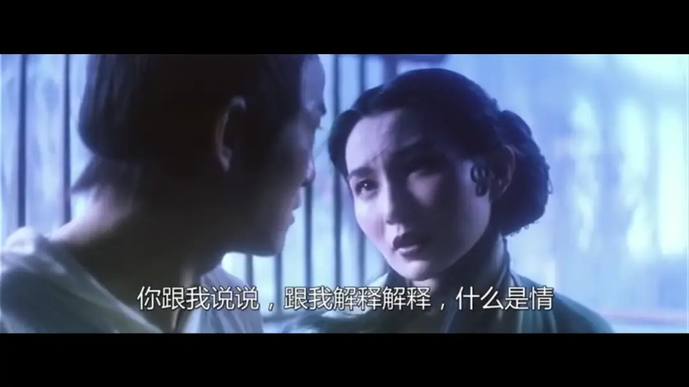
当许仙支支吾吾难以回答时，青蛇觉得很困惑，人自己都回答不了，为什么姐姐要如此执着于这个梦想呢。
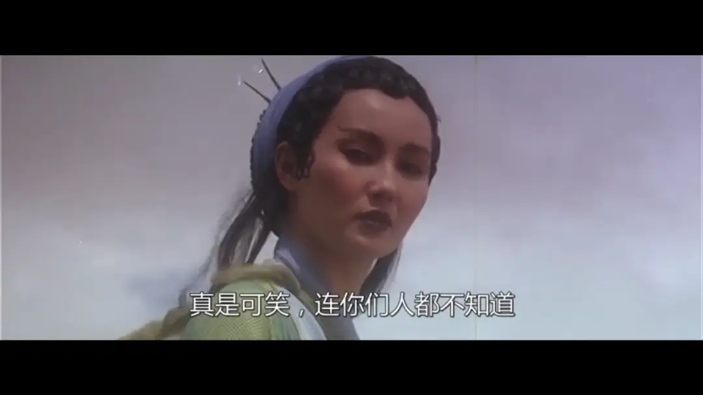
就是这样一个简单直接的人，反而到最后成为了最清醒的人。
当青蛇看着姐姐为了成为人的梦想，放弃自己千年道行，甚至即将惨死时，青蛇非常痛心，她和白蛇说的最后一句话是：你说人间有情，难道妖就没有情么。
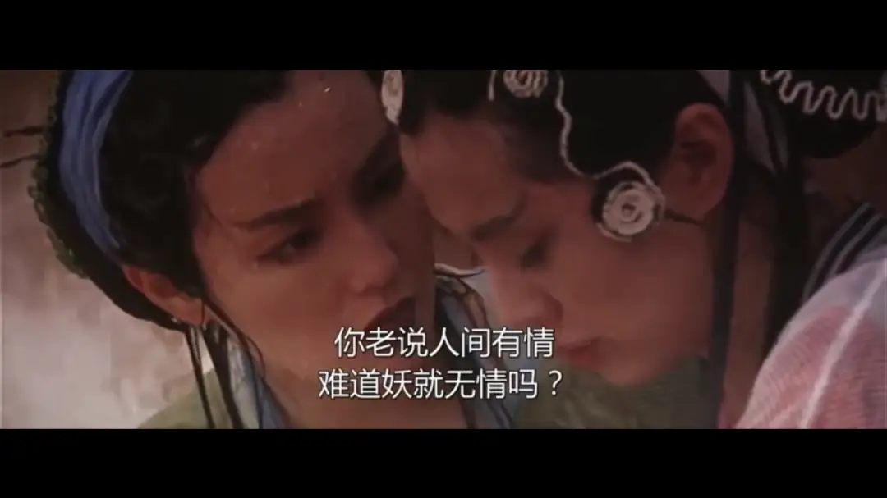
青蛇的这句话非常真挚，自己之前明明学不了如何做人，却一直别别扭扭的学，并不是因为她觉得做人很好，而是因为她对姐姐白蛇的情谊，她想要一直陪着姐姐。
而白蛇一心想要做人，却未曾留意到陪伴她五百年的青蛇对她的情要比人类更深。
电影最后，因为斗法洪水失控导致很多人死去，法海呐喊着要收拾青蛇时，青蛇却平静地劝法海还是省省力气。
洪水泛滥，并非法海以及白蛇和青蛇所愿，但是很多无辜人惨死已成事实，他们三人都有责任。
法海也是一样的戴罪之身，你又何以如此理直气壮做正义的审判者！
青蛇的话直接戳穿了法海的虚伪，法海也只好羞愧地低下了头。
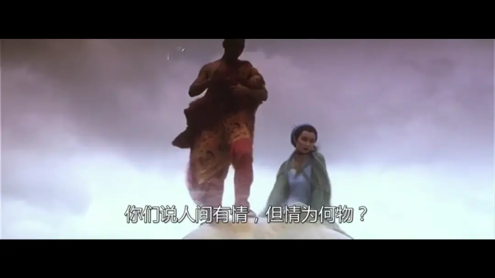
因此，习惯站在道德制高点去审判别人的人，往往不是真诚的人，因为他从未真正意识到自己也经常是复杂多变甚至是软弱无力的。
而这也成为了许仙之死的原因。
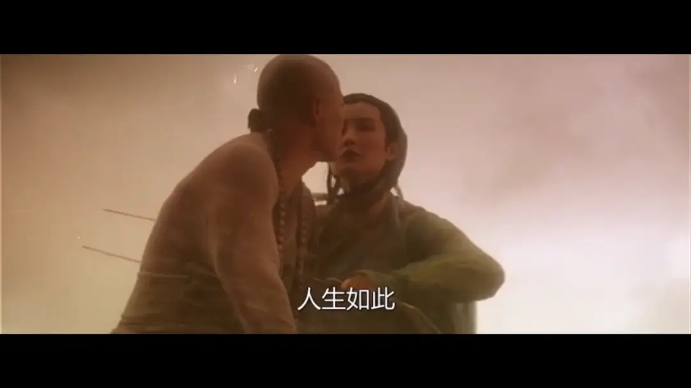
许仙当初被白蛇的美貌吸引而纵情于男欢女爱之中。
后来，他被显出原形的青蛇吓死，最终又被白蛇和青蛇冒死救活。
救活后，一边是对自己有恩情的白蛇，一边是劝自己及时回头的法海。
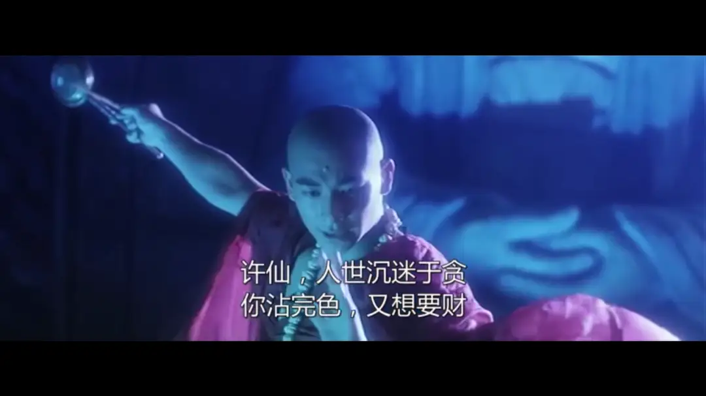
最终，许仙做出选择，出家为僧，口里一边念着自己罪孽深重，一边请求法海放过白蛇。
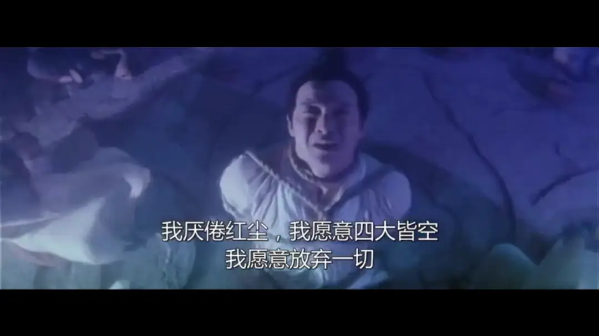
大致看下来，许仙的行为无可挑剔。
但如果我们设身处地想一想，就会发现许仙的行为其实非常可恶。
白蛇成为许仙的妻子后，一直真情实意地对待他。
甚至，为了许仙，白蛇甘愿放弃自己1500年的修行为许仙产子。
可这一切，竟然成为了许仙最终口中深重的“罪孽”。
许仙已经不自觉地站在道德的制高点否定了白蛇一切的努力和牺牲，仿佛在以一种“菩萨”般的心肠怜悯着苦苦挣扎着的白蛇。
别人是在牺牲所有在维护一个家庭，而许仙却事不关己、充满悲悯地说这种努力如同飞蛾扑火。
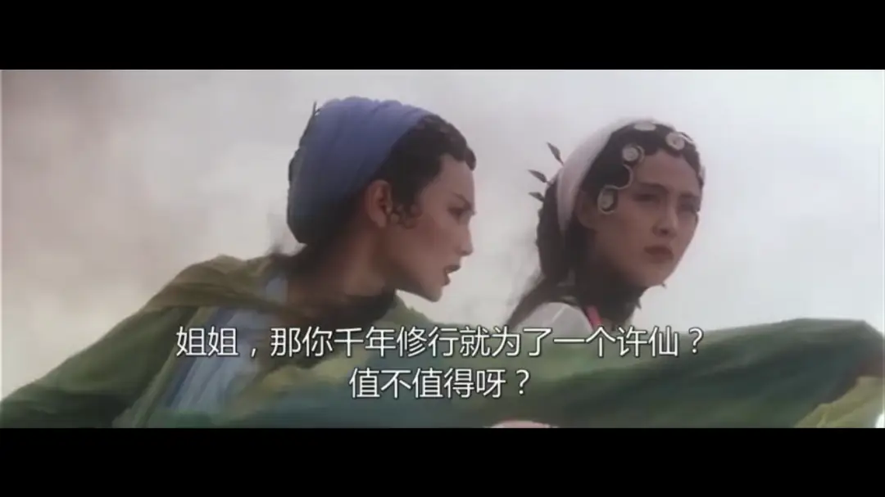
所以，青蛇愤怒地说：（许仙）你出卖了我们。
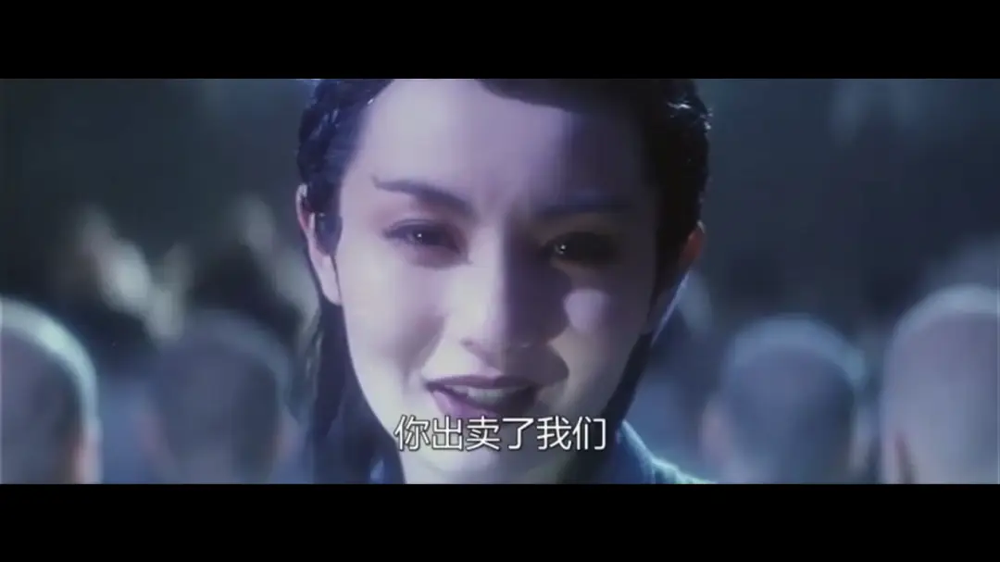
这就是许仙之死的罪状。
一种空洞的、傲慢的、高高在上的虚伪。
一种迂回的、幼稚的、自欺欺人的懦弱。
给别人宣判之前，自我为义之先，我们最应该问的是自己是否也曾这样，我们是否真的了解对方。
这样，我们才能真正明白为什么沉默是金。
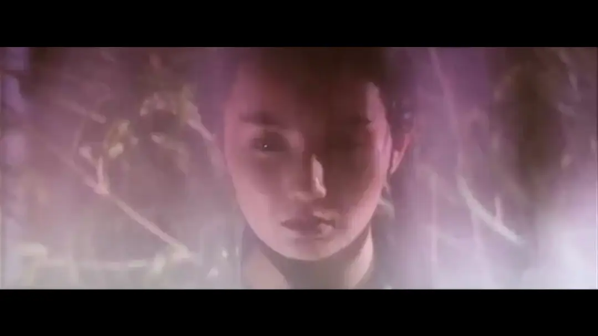
这里没有挑逗你眼目情欲的小鲜肉
也没有挑动你肉体情欲的段子
更没有膨胀你今生骄傲的鸡血
我们只在乎那些最质朴真诚的作品
在那里我们才能恢复真正的想象力
我们也坚信这才是我们真正需要的

ID:Six_hundred_hits
长按二维码，一键关注
【六百击】
电影评论
尽情分享朋友圈

微信二维码打赏通道